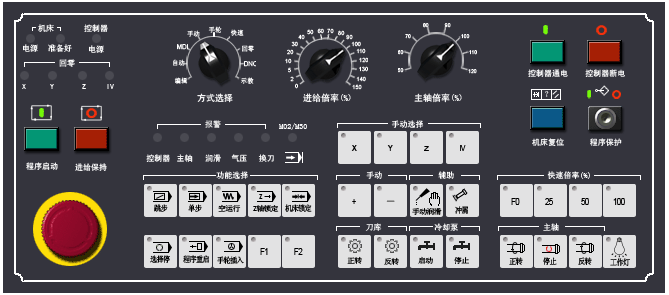

手动移动机床台面按钮
快速倍率按钮 进给速度(F)调节旋钮
调节数控程序运行中的进给速度，调节范围从0～150% 。置光标于旋钮上，点击鼠标左键转动。 主轴速度调节旋钮 调节主轴速度，速度调节范围从0～120%。 单步执行开关 每按次执行一条数控指令。 程序停 自动方式下，遇有M00程序停止。 冷却液开关
刀库中正反转
程序编辑开关 置于“ON”位置,可编程序。
程序重启动 由于刀具破损等原因自动停止后,程序可以从指定的程序段重新启动。